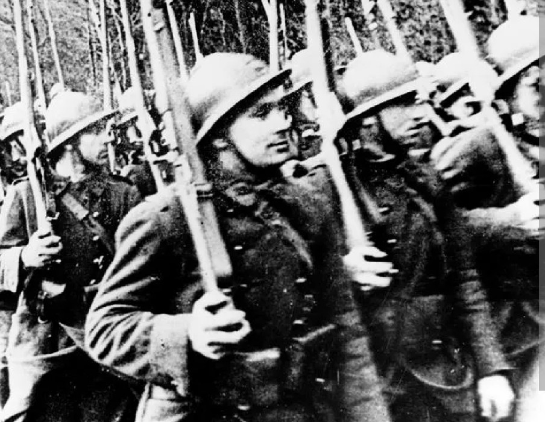
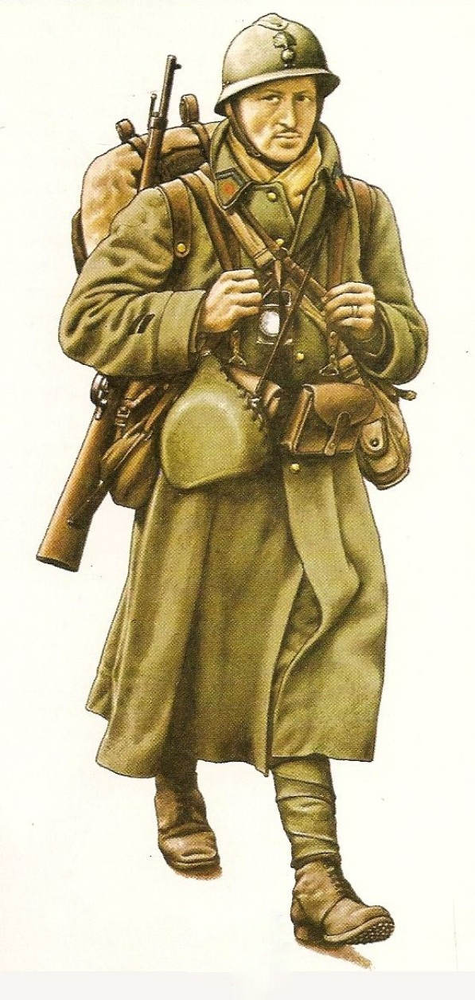

L’infanterie française de 1939 constitue le cœur de l’armée française au début de la Seconde Guerre mondiale. Héritière des traditions de 14–18, elle combine équipements modernisés et éléments plus anciens encore en service.
Le soldat français de 1939 porte une tenue kaki modèle 1935, un casque Adrian, et un équipement en cuir fauve.

L’infanterie française est principalement équipée du fusil MAS‑36, mais de nombreux régiments utilisent encore le fusil Berthier, faute de modernisation complète avant 1940.
L’infanterie française est organisée en compagnies et bataillons, soutenue par l’artillerie et les chars B1 ou R35. Elle occupe les positions, mène les assauts, et assure la défense des secteurs fortifiés.
Malgré un équipement parfois hétérogène, elle reste une force disciplinée et expérimentée.